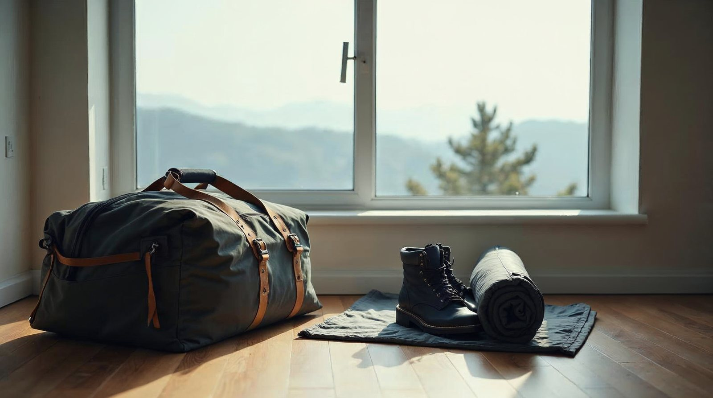
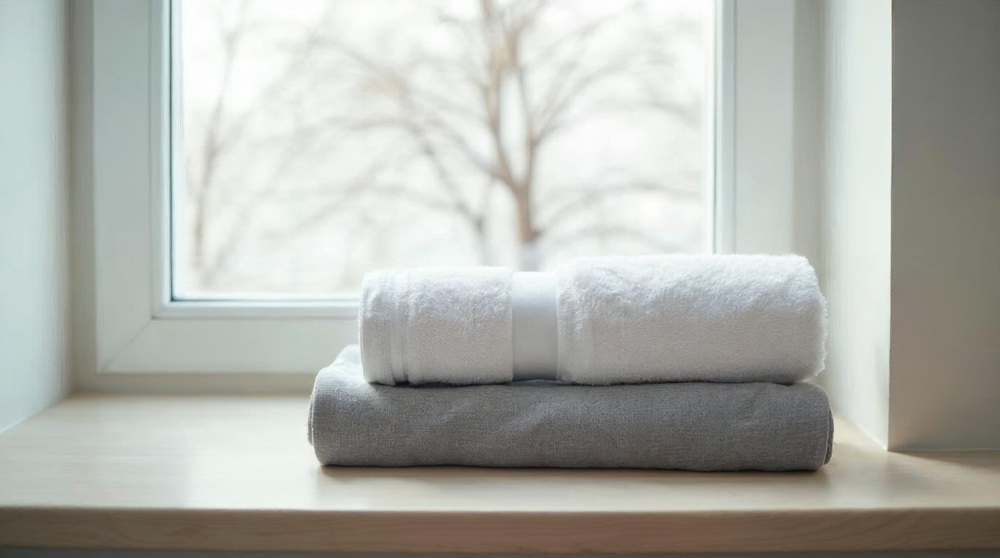
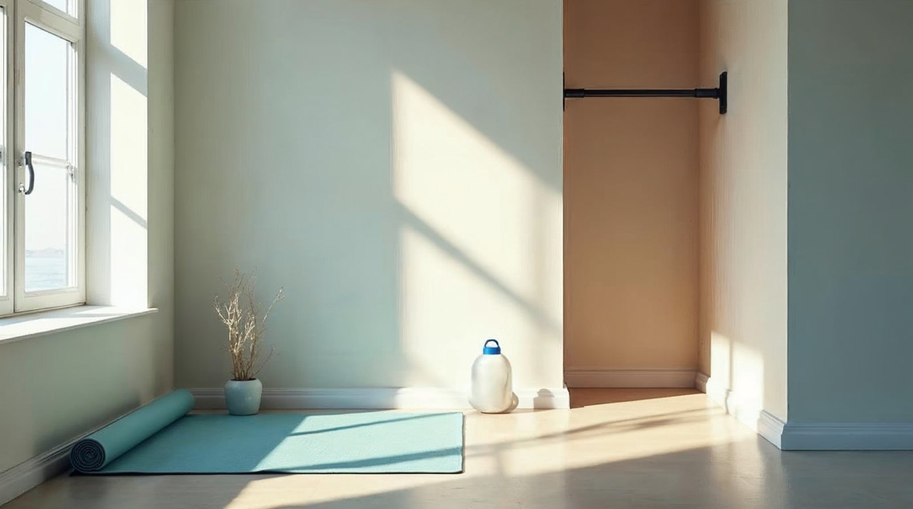
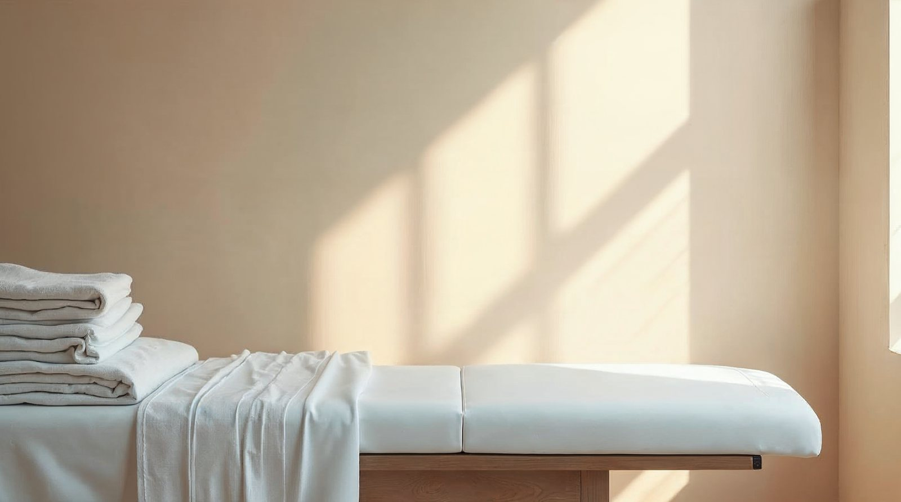
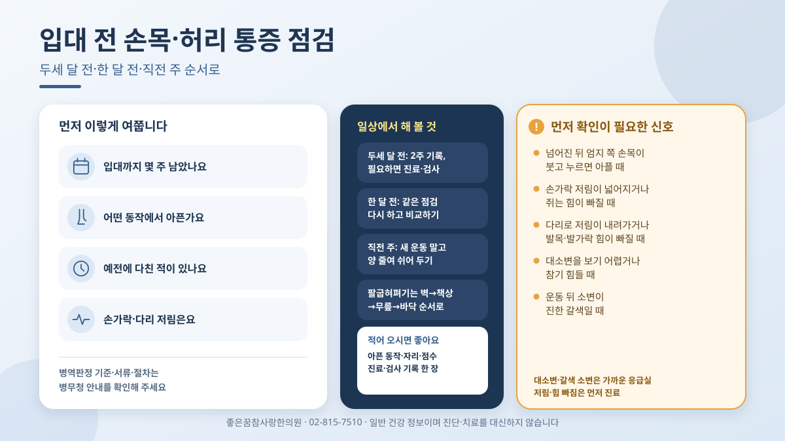

이종호 한의사 감수좋은꿈참사랑한의원 대표원장 (한의사 면허번호 19769)발행 2026-11-26 · 수정 2026-11-26
이 글의 차례
입영 날짜가 정해지고 나면 달력이 달리 보입니다. 친구들과 송별회 날을 잡고, 머리는 언제 자를지 이야기하고, 밤에는 괜히 방바닥에 엎드려 팔굽혀펴기를 해 봅니다. 그런데 열 개쯤 했을 무렵 손목 등 쪽이 시큰합니다. 아르바이트로 오래 서 있던 날 밤에는 허리가 묵직해 몇 번이고 돌아눕습니다. 이 손목으로 괜찮을까, 가서 아프면 어떡하지.
그런 생각이 들기 시작하면 남은 날짜가 더 빨리 줄어드는 것 같습니다.
진료실에서 이런 말씀을 자주 듣습니다. 입대가 두 달 남았는데 팔굽혀펴기만 하면 손목이 아프다고, 예전에 허리를 한 번 삐끗한 뒤로 오래 서 있으면 묵직하다고요. 함께 오신 부모님 얼굴이 본인보다 더 걱정스러울 때도 많습니다.
아픈 것도 아픈 것이지만, 낯선 곳에서 아프면 어쩌나, 내 상태를 제대로 설명할 수 있을까 하는 걱정이 더 크게 느껴지는 시기이지요. 그 마음, 충분히 그럴 만합니다. 잘 해내고 싶은 마음이 크니까 걱정도 큰 겁니다.
제가 드리고 싶은 답은 이렇습니다. 마음에 걸리는 손목이나 허리 통증이 있다면 입대 두세 달 전부터 언제 어떤 동작에서 아픈지 살피고, 필요하면 진료를 받아 두세요. 운동은 몰아서 하지 말고 나누어 올리시고요. 그동안 받은 진료와 검사 내용을 한 장으로 정리해 두면 입대 뒤 아플 때 설명하기가 훨씬 쉬워집니다.
병역판정검사나 입영과 관련된 기준, 서류, 절차는 이 글에서 다루지 않습니다. 그 부분은 병무청 안내를 확인해 주세요. 제가 드리는 이야기는 입대 뒤의 훈련과 생활을 조금 더 편한 몸으로 시작하기 위한 준비입니다.
왜 입대를 앞두고 손목과 허리가 마음에 걸릴까요
입대 뒤에는 생활 리듬이 크게 바뀌고 몸을 쓰는 시간이 늘어나는 경우가 많습니다. 손바닥으로 체중을 받치는 동작, 짐을 메고 오래 걷는 일, 오래 서 있는 일, 무거운 것을 들어 옮기는 일이 하루에 여러 번 겹치기도 합니다. 그동안 책상 앞에서 공부하거나 일하며 지낸 분이라면 손목과 허리가 그 변화를 가장 먼저 느끼기 쉽습니다.
팔굽혀펴기 자세에서 손목은 크게 뒤로 젖혀진 채 상체 무게를 받칩니다. 이때 손등 쪽이 끼이듯 아픈 분이 있고, 새끼손가락 쪽 손목이 아픈 분이 있고, 엄지 쪽이 아픈 분이 있습니다. 새끼손가락 쪽 손목에는 손목을 받쳐 주는 연골과 인대 구조(삼각섬유연골복합체)가 있어, 체중을 싣거나 손목을 비틀 때 이 자리가 아프다면 따로 살펴볼 필요가 있습니다.
엄지 쪽이 아프다면 엄지를 움직이는 힘줄 쪽 문제를 먼저 생각하지만, 예전에 넘어지며 손을 짚은 적이 있다면 손목뼈(주상골)도 함께 떠올려야 합니다. 이 뼈의 골절은 처음 엑스레이에서 잘 보이지 않는 경우가 있어 그냥 지나치기 쉽다고 알려져 있습니다. 손가락 저림이 함께 있다면 신경 쪽 단서입니다.
엄지와 검지, 중지가 저리면 손목 앞쪽 통로(손목굴)를 지나는 신경을, 넷째 손가락 반쪽과 새끼손가락이 저리면 팔꿈치 안쪽을 지나는 신경을 함께 살핍니다.
허리는 앉아 지낸 시간의 영향을 많이 받습니다. 오래 앉아 있으면 엉덩이와 허벅지 뒤 근육이 굳고, 몸통을 받쳐 주는 근육이 오래 버티는 힘도 줄어듭니다. 그런 상태에서 갑자기 오래 서 있거나 무게를 지고 걸으면 허리가 먼저 지칩니다. 허리를 굽혀 바닥의 물건을 드는 습관이 있다면 부담은 더 커지지요.
허리 통증과 함께 다리로 저림이 내려간다면 신경 쪽 확인이 필요합니다. 그리고 젊은 남성에게서 아침마다 허리가 30분 넘게 뻣뻣하고, 쉬면 오히려 심해지고 움직이면 덜해지는 통증이 석 달 넘게 이어진다면 척추에 생기는 염증성 질환(강직척추염 등)을 확인해 보는 것이 좋다고 알려져 있습니다.
입대 직전에 운동을 몰아서 하는 것도 흔한 계기입니다. 근육보다 힘줄이 새로운 부담에 적응하는 데 시간이 더 걸린다고 알려져 있어, 며칠 사이 횟수를 크게 늘리면 힘줄과 관절 둘레가 먼저 탈이 납니다. 드물게는 근육이 크게 상해 소변이 진한 갈색으로 나오는 일(횡문근융해)도 있습니다.
여기에 송별회와 늦은 잠, 입대를 앞둔 긴장이 겹치면 몸이 회복할 틈은 더 줄어듭니다. 한의학에서는 이렇게 긴장과 피로가 쌓여 기혈이 원활히 돌지 못할 때 근육이 쉽게 굳고 결린다고 보기도 합니다.

이런 분들을 자주 뵙습니다
이런 분들이 많습니다. 하루 대부분을 앉아서 공부하고 게임을 하며 지내다가, 입대를 두 달쯤 앞두고 마음이 급해져 팔굽혀펴기를 하루에 몰아서 많이 하는 분입니다. 며칠 지나 손목 등 쪽이 시큰해지면 그제야 놀라십니다. 저는 이런 분께 우선 바닥 대신 벽이나 책상을 짚는 자세로 내려가 보자고 말씀드립니다.
손바닥을 펴는 대신 주먹을 쥐거나 손잡이를 잡아 손목을 곧게 두었을 때 덜 아픈지도 비교해 봅니다. 어느 각도에서 아픈지 알면 무엇을 조심할지가 보입니다.
학창 시절 운동을 하다 넘어지며 손을 짚은 뒤로 엄지 쪽 손목이 가끔 아팠는데 그냥 지냈다는 분도 계십니다. 평소엔 괜찮다가 체중을 실을 때만 찌릿하다고 하시지요. 이런 경우는 미루지 말고 입대까지 시간이 넉넉할 때 영상 검사가 가능한 의료기관에서 먼저 확인을 받아 두시라고 권합니다. 검사를 받고 결과지와 기록을 챙기는 데에도 시간이 걸리기 때문입니다.
물류센터나 이삿짐 아르바이트를 하다 허리를 삐끗한 뒤로, 오래 서 있으면 허리가 묵직하고 한쪽 엉덩이가 당긴다는 분도 자주 뵙습니다. 이런 분께는 몇 분쯤 서 있으면 묵직해지는지, 몇 분쯤 걸으면 다리가 당기는지 시간으로 적어 오시라고 부탁드립니다. 막연히 오래 서 있으면 아프다는 말보다 20분이 지나면 묵직해진다는 말이 훨씬 많은 것을 알려 줍니다.
밤에 손이 저려 깬다는 분도 계십니다. 스마트폰과 마우스를 오래 쓰는 생활에서 엄지와 검지 쪽이 저린 경우가 많은데, 저림은 통증보다 먼저 확인이 필요한 신호일 때가 있어 신경 쪽부터 살핍니다. 자녀가 입대를 앞두고 손목이 아프다는데 무엇을 챙겨 주면 좋을지 물으시는 부모님도 계십니다.
저는 그럴 때 대신 설명해 주시기보다, 본인이 직접 아픈 동작을 적어 오도록 도와주시라고 말씀드립니다. 입대 뒤에는 결국 본인이 자기 몸을 설명해야 하니까요.

입대 두세 달 전, 한 달 전, 직전 주에 해 볼 것
입대 두세 달 전: 지금의 몸을 알아 두는 때
먼저 2주 동안 손목과 허리가 언제 어떤 동작에서 아픈지 적어 보세요. 손목은 무릎을 대고 엎드린 팔굽혀펴기 자세에서 손바닥으로 체중을 실어 봅니다. 손등 쪽인지, 엄지 쪽인지, 새끼손가락 쪽인지, 아픈 자리를 손가락으로 짚어 기록합니다. 손가락이 저리다면 어느 손가락인지, 밤에 저려서 깨는지도 적습니다.
손목이 붓거나, 딸깍 소리와 함께 아프거나, 물병 뚜껑을 열 때 한쪽만 힘이 덜 들어가는지도 함께 봐 두세요. 허리는 몇 분 서 있으면 묵직해지는지, 몇 분 걸으면 불편해지는지, 바닥의 물건을 들 때 아픈지, 아침에 뻣뻣함이 풀리는 데 얼마나 걸리는지를 적습니다. 통증은 0~10 점수로 매기면 비교하기 쉽습니다.
2주를 적어 보니 같은 동작에서 같은 자리가 계속 아프거나, 저림이나 붓기가 있다면 이 시기에 진료를 받아 보세요. 필요하면 영상 검사도 이때 받는 편이 좋습니다. 그동안 다닌 병원이 있다면 진단서나 소견서, 영상 판독지, 진료 기간, 받은 치료, 복용 약을 모으기 시작합니다.
의무기록 사본은 대개 본인이 신분증을 가지고 병원 창구에서 신청하는데, 필요한 서류와 비용, 걸리는 시간은 병원마다 다르니 미리 전화로 확인해 두세요.
운동은 이때 낮은 강도로 시작합니다. 걷기는 하루 20~30분부터. 팔굽혀펴기는 벽을 짚는 자세에서 시작해 책상이나 식탁 모서리를 짚는 자세, 무릎을 대는 자세, 바닥 자세 순서로 단계를 밟습니다. 한 단계에서 10~15번씩 2~3세트를 며칠 동안 손목 통증 없이 할 수 있을 때 다음 단계로 넘어가세요.
몸통 근육은 엎드려 버티기를 20초부터 시작하고, 네발 자세에서 한쪽 팔과 반대쪽 다리를 뻗어 몇 초 머무는 동작을 더합니다. 바닥의 물건은 허리를 숙이지 말고 엉덩이를 뒤로 빼며 무릎을 굽혀 드는 연습을 가벼운 상자로 해 두면 좋습니다. 일어나는 시각도 이때부터 조금씩 앞당겨 고정해 보세요.
입대 한 달 전: 같은 점검을 다시 해 보는 때
한 달 전에는 두세 달 전에 했던 점검을 그대로 다시 해 봅니다. 같은 자세, 같은 동작으로요. 처음 기록과 나란히 놓고 보면 아픈 자리가 그대로인지, 점수가 내려갔는지, 오히려 넓어졌는지가 보입니다. 같은 동작에서 여전히 아프거나 더 심해졌다면 입대 직전까지 기다리지 말고 지금 진료를 받으세요.
운동은 한 번에 하나씩만 올립니다. 횟수를 늘리는 주에는 무게를 늘리지 않고, 걷는 시간을 늘리는 주에는 속도를 올리지 않는 식입니다. 책 몇 권을 넣은 배낭을 메고 20~30분 걸어 보며 허리가 언제부터 묵직해지는지도 살펴보세요. 기준은 다음 날 아침입니다. 자고 일어났을 때 통증이 전날보다 심하다면 한 단계 낮춥니다.
이 무렵에는 모아 둔 기록을 한 장으로 정리해 두세요. 언제부터 어디가 어떤 동작에서 아팠는지, 어떤 진료와 검사를 받았고 결과가 어땠는지, 복용 중인 약, 지금 조심하는 동작을 짧게 적습니다. 종이 한 장과 휴대폰 사진으로 함께 남겨 두면 편합니다.
입대 직전 주: 새로 하지 않고 쉬어 두는 때
마지막 주에는 새로운 운동을 시작하지 않습니다. 하던 운동도 양을 절반쯤으로 줄이고, 가벼운 걷기와 스트레칭으로 몸을 풀어 두는 정도면 충분합니다. 이 시기에 몸을 바짝 끌어올리려 하면 피로만 쌓인 채 입대하기 쉽습니다. 송별회 자리가 이어져도 술은 줄이고, 잠자는 시각과 일어나는 시각을 지켜 주세요.
이삿짐이나 무거운 가구를 옮기는 일은 이 주에는 피하는 편이 좋습니다.
정리해 둔 기록 한 장은 다시 한번 확인해 두세요. 입영 때 무엇을 가져갈 수 있는지는 병무청과 입영 안내를 따르시면 됩니다. 입대 뒤에 아프면 참지 말고 부대 안내에 따라 진료를 요청하세요. 언제부터, 어떤 동작에서 아팠는지 짧은 시간에 설명해야 할 때 이 한 장이 힘이 됩니다.

얼마나 지켜보고, 언제 진료를 받을까요
운동을 늘린 뒤 이삼일 근육이 뻐근한 정도라면 양을 조금 줄이고 지켜보셔도 됩니다. 하지만 양을 줄였는데도 같은 동작에서 같은 자리가 1~2주 넘게 아프다면 진료를 받아 보시길 권합니다. 입대까지 남은 시간이 정해져 있으니 너무 오래 기다리지 않는 편이 좋습니다. 아래와 같은 신호가 있다면 기다리지 말고 먼저 병원에서 확인을 받으세요.
- 넘어지며 손을 짚은 뒤 엄지 쪽 손목이 붓고, 엄지 아래 오목한 곳을 누르면 아픈 경우
- 손가락 저림이 넓어지거나 쥐는 힘이 빠져 물건을 자꾸 떨어뜨리는 경우
- 허리에서 다리로 저림이 내려가거나 발목·발가락에 힘이 빠지는 경우
- 소변이나 대변을 보기 어렵거나 참기 힘들고, 사타구니 둘레 감각이 둔해진 경우
- 아침에 허리가 30분 넘게 뻣뻣하고 움직이면 오히려 덜해지는 날이 석 달 넘게 이어지는 경우
- 밤에 가만히 누워 있어도 아프고, 열이 나거나 체중이 줄어드는 경우
- 운동 뒤 근육이 심하게 붓고 아프며 소변이 콜라처럼 진한 갈색으로 나오는 경우
대소변 조절이 어려울 때, 소변이 진한 갈색이고 근육이 심하게 아플 때, 운동 중 가슴이 아프고 숨이 찰 때는 가까운 응급실에서 바로 확인을 받으세요. 복용 중인 약은 처방한 의사와 상의 없이 줄이거나 끊지 않습니다. 입대를 앞두고 마음이 많이 힘들 때는 ☎ 109로 바로 전화해 이야기를 나눌 수 있습니다.

좋은꿈참사랑한의원에 처음 오시면
처음 오시면 저는 입대까지 남은 기간부터 여쭙니다. 그다음 언제부터 어디가 아팠는지, 어떤 동작에서 아픈지, 예전에 다친 적이 있는지, 그동안 받은 진료와 검사는 무엇인지 차례로 듣습니다. 최근에 운동을 얼마나 늘렸는지, 하루에 몇 시간 앉아 지내는지, 잠은 몇 시에 들어 몇 시에 일어나는지도 여쭙니다.
이어서 양손을 올려 봐 달라고 말씀드리고 맥을 짚습니다. 잠과 피로, 긴장, 소화가 어떤지 함께 여쭙고 필요하면 혀도 봅니다. 손목은 움직이는 범위와 손바닥으로 체중을 실을 때 아픈 자리, 쥐는 힘이 양쪽 같은지, 손가락 감각을 확인하고 목과 팔꿈치도 함께 봅니다.
허리는 앞으로 굽히고 뒤로 젖히고 옆으로 기울이는 움직임, 한 발로 서기, 걷는 모습, 바닥의 물건을 드는 자세를 보고 다리의 감각과 힘을 확인합니다. 필요하다고 판단되면 초음파로 손목 힘줄과 인대 같은 부드러운 조직을 양쪽 비교해 살펴봅니다. 뼈나 신경 확인이 먼저라고 판단되면 영상 검사가 가능한 의료기관을 먼저 안내합니다.
그 뒤 상태에 맞춰 침, 약침, 온열 치료, 추나 등을 신중하게 정합니다. 그리고 입대까지 남은 주 수에 맞춰 집에서 할 운동의 단계와 올리는 속도를 함께 정합니다. 다시 오시면 지난번 아팠던 동작이 어땠는지, 운동 기록에 무엇이 적혔는지부터 이어서 여쭙습니다.
한의원 진료 기록이 필요하시면 발급 가능한 서류와 걸리는 시간을, 보험 적용 여부와 함께 방문 전 전화(02-815-7510)로 확인해 주세요. 오실 때는 2주 동안 적은 기록, 진단서나 영상 판독지 같은 지난 진료 자료, 복용 중인 약을 챙겨 오시면 이야기가 훨씬 빨라집니다.
마치며
입대를 앞둔 몇 달은 짧고 할 일은 많습니다. 손목과 허리까지 챙기려니 마음이 더 급해지지요. 그래도 남은 시간을 셋으로 나누면 할 일이 단순해집니다. 두세 달 전에는 지금의 몸을 알아 두고, 한 달 전에는 같은 점검을 다시 해 보고, 직전 주에는 새로 하지 않고 쉬어 두는 것. 몸은 조금씩 나누어 준 부담에는 차근차근 따라오는 경우가 많습니다.
오늘 적어 둔 기록 한 장이 낯선 곳에서 첫 하루를 시작할 때 작은 힘이 되기를 바랍니다.
다음에 오시면 지난번 아팠던 자세에서 손목이 어땠는지, 운동 기록에 어떤 숫자가 적혔는지부터 여쭙겠습니다.
함께 읽으면 좋은 글
- 체력시험 준비로 갑자기 운동량을 늘린 뒤 무릎과 종아리가 아플 때는?
- 정형외과·물리치료를 다녀도 손목 통증이 오래갈 때, 상담에서 무엇을 같이 짚어 보나요?
- 허리 디스크 초기 신호와 다리 저림은 어떻게 구분하나요?
- 다른 병원에서 받은 검사 결과는 한의원에 어떻게 가져가면 되나요?

왜 입대를 앞두고 손목과 허리가 마음에 걸릴까요
- 입대 뒤에는 생활 리듬이 크게 바뀌고 몸을 쓰는 시간이 늘어나는 경우가 많습니다.
- 손바닥으로 체중을 받치는 동작, 짐을 메고 오래 걷는 일, 오래 서 있는 일, 무거…
이런 분들을 자주 뵙습니다
- 이런 분들이 많습니다.
- 하루 대부분을 앉아서 공부하고 게임을 하며 지내다가, 입대를 두 달쯤 앞두고 마음이…
입대 두세 달 전, 한 달 전, 직전 주에 해 볼 것
- 먼저 2주 동안 손목과 허리가 언제 어떤 동작에서 아픈지 적어 보세요.
- 손목은 무릎을 대고 엎드린 팔굽혀펴기 자세에서 손바닥으로 체중을 실어 봅니다.
얼마나 지켜보고, 언제 진료를 받을까요
- 넘어지며 손을 짚은 뒤 엄지 쪽 손목이 붓고, 엄지 아래 오목한 곳을 누르면 아픈 경우
- 손가락 저림이 넓어지거나 쥐는 힘이 빠져 물건을 자꾸 떨어뜨리는 경우
자주 묻는 질문
입대 전에 꼭 진료를 받아 두어야 하나요?
모든 분이 그런 것은 아닙니다. 같은 동작에서 같은 자리가 2주 넘게 반복해서 아프거나 저림·붓기가 있다면, 검사와 기록을 챙길 시간이 있도록 입대 두세 달 전쯤 확인을 받아 두시길 권합니다.
병역판정검사나 입영 때 필요한 기준과 서류는 어디서 확인하나요?
병역판정검사의 기준과 서류, 입영 절차는 이 글에서 정해 말씀드리기 어렵습니다. 병무청 안내를 확인해 주세요.
팔굽혀펴기를 할 때 손목이 아프면 쉬어야 하나요?
완전히 쉬기보다 벽, 책상, 무릎을 대는 자세처럼 손목 부담이 적은 단계로 낮추어 이어 가 보세요. 다음 날 아침 통증이 전날보다 심하면 한 단계 더 낮추고, 저림이나 붓기가 있으면 먼저 확인을 받습니다.
한의원 진료 기록도 발급받을 수 있나요?
발급 가능한 서류와 걸리는 시간은 방문 전 전화(02-815-7510)로 확인해 주세요. 다른 병원 기록은 해당 병원에 미리 문의해 두시는 편이 좋습니다.
입대 직전에 운동을 몰아서 하면 체력이 빨리 늘지 않을까요?
짧은 기간에 몰아서 하면 근육과 힘줄이 적응할 틈 없이 다치기 쉽고, 드물게 근육이 크게 상해 소변이 진한 갈색으로 나오는 일도 있습니다. 조금씩 나누어 올리고 직전 주에는 양을 줄여 쉬어 두세요.
좋은꿈참사랑한의원은 재진 때 지난번 이야기부터 이어서 여쭙니다. 진료시간과 예약은 오시는 길에서 확인하세요.
어디서 상담받을 수 있나요?
좋은꿈참사랑한의원은 서울 동작구 만양로2길 2 신성빌딩 3층·5층(서울 동작구 상도동, 7호선 상도역 3번 출구 근처)에 있습니다. 한의사 3명(이종호 대표원장, 조영기 수석진료원장, 정원영 진료원장)이 진료합니다. 진료시간은 평일 09:30~20:00(점심 13:00~14:00), 토·일·공휴일 09:30~15:00이며, 방문 전 전화로 확인을 권합니다. 예약은 네이버 예약, 카카오톡 상담, 전화 02-815-7510로 받습니다.
이 글은 일반적인 건강 정보이며 개인의 진단이나 치료를 대신하지 않습니다. 증상이 있거나 복용 중인 약이 있다면 진료를 통해 확인하세요. 치료 효과는 개인마다 다를 수 있습니다.
작성 기준: 일반적으로 알려져 있는 건강 정보를 참고해 정리했습니다(대표원장 감수). 증상 기록은 1~2주 동안 하루 1회, 비슷한 시간에 적어 오시면 지난 상태와 비교하기 쉽습니다.